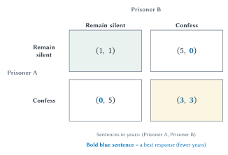
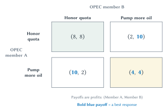
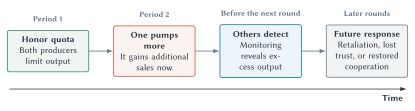

Chapter 17
Oligopoly and Strategic Behavior
When only a few rivals matter, each firm must anticipate how the others will respond.

Suppose two airlines serve the same nonstop route. One airline considers adding an early-morning flight. It cannot evaluate that choice by looking only at its own demand and cost. Will the other airline add a flight too? Will it cut fares? Will it improve service, offer more rewards, or leave the schedule unchanged?
The answer changes whether the first airline’s new flight succeeds. Its profit depends on its own choice and on the response that choice provokes.
That is the defining problem of oligopoly: a market has a small number of important sellers, and each seller must pay close attention to the others. The firms are strategically interdependent.
This does not mean that every oligopoly behaves alike. A few firms may compete fiercely. They may avoid aggressive price cuts because they fear retaliation. They may coordinate openly or quietly. They may compete through capacity, quality, compatibility, advertising, or innovation instead of price. One firm may be much larger than the others, or several may be close rivals.
The number of firms matters, but it does not settle the outcome. We also need to ask what the firms choose, how easily buyers can switch, whether entry is possible, what rivals can observe, and whether the same firms expect to meet again.
Quick Concept
Strategic Interdependence
Strategic interdependence means that one firm’s payoff depends not only on its own choice, but also on the choices and responses of its rivals.
When Rivals Cannot Be Ignored
Chapter 16 studied markets with many sellers of differentiated products. Each firm had some control over price, but no single rival usually determined its decision. Oligopoly changes that. When only a few rivals matter, a firm may need to anticipate each one.
Consider commercial aircraft. A decision by one major producer to develop a new plane affects the expected sales, pricing, and development plans of the other. Consider game consoles. A new console’s success depends partly on rival hardware, game availability, compatibility, and the decisions of software developers. Consider wireless service. A change in price or data limits may be matched quickly by the other major carriers.
The essential feature is not a particular number such as two, three, or four. It is that the choices of a few sellers materially affect one another.
The Quantity And Price Effects Still Matter
Chapter 15 separated a firm’s decision to sell another unit into a positive quantity effect and a negative price effect. That reasoning remains useful, but rivals now complicate it.
Suppose an airline adds seats on a route. The additional passengers generate revenue. That is the quantity effect. But more seats in the market may put downward pressure on fares, reducing revenue on seats the airline was already selling. That is the price effect. The airline must also cover the marginal cost of the added service.
A monopolist considers the price effect on all market output because it supplies the whole market. A perfectly competitive firm treats the market price as given. An oligopolist lies between those benchmarks. Rivals supply part of market output, and they may change their own behavior after the firm acts.
This is why the quantity-price comparison is a starting point rather than a complete answer. The rival airline may cut fares, expand capacity, or retreat from the route. The firms may already be coordinating. A high fare may attract a new carrier if airport access and other entry barriers are not too great. The same proposed output increase can therefore produce different results in different markets.
Quick Concept
The Quantity And Price Effects Survive, But Rivals Matter
An oligopolist gains revenue from an additional sale but may lose revenue on earlier sales if greater market output lowers price. Rival responses, possible coordination, entry, and the closeness of substitutes determine how important those effects are.
Few Sellers Does Not Produce One Answer
Economists have built different models of oligopoly because different strategic settings produce different predictions. In one model, firms choose output or capacity while anticipating rival output. In another, firms compete directly on price. These approaches are associated with Augustin Cournot and Joseph Bertrand, but this chapter will not ask you to solve either formal model.
The principles lesson is enough: a market with a few firms can fall anywhere from intense rivalry to conduct that resembles a monopoly. Oligopoly is not a prediction about price. It is a warning that each firm’s best choice depends on how its rivals respond. Product differences, capacity limits, timing, repeated interaction, and entry help determine the outcome.
Common Mistake
Few Firms Does Not Imply One Predictable Outcome
Some oligopolies compete aggressively; others sustain higher prices or coordinate behavior. Outcomes depend on substitutes, entry, information, capacity, repeated interaction, and the choices firms make.
Define The Market Before Counting Firms
The statement “this industry has four firms” sounds precise, but it may not tell us much until the market has been defined.
Three firms selling nearly identical products may constrain one another more strongly than ten firms protected by location, switching costs, or specialized customer groups. Cross-price elasticity from Chapter 5 can help: if buyers readily switch from one firm’s product to another when the first firm’s price rises, the products are close substitutes. But cross-price elasticity is not the whole analysis. Entry, capacity, geography, quality, time, and expected rival responses still matter.
Market structure applies to a market, not to a company in the abstract. Apple competes in phones, computers, services, operating systems, app distribution, and other settings. NVIDIA competes in gaming graphics, AI computing, networking, software, and other settings. Each company faces different substitutes and entry conditions in those different markets. Asking whether Apple or NVIDIA “is a monopoly” therefore skips the most important step. First identify the product, customers, geographic area, close substitutes, and barriers to entry.1
Market boundaries also change over time. In 1975, affiliates of ABC, CBS, and NBC drew 95 percent of the prime-time television audience, while cable reached only about 13 percent of television households. Describing television as a three-network oligopoly captured something important then. Cable channels, a fourth broadcast network, and eventually streaming created new alternatives. A market description that once helped can become obsolete when technology and entry change the available substitutes.2
A Simple Language For Strategic Choices
To analyze strategic behavior, economists use game theory. The name may sound like the topic is recreational, but the tool applies whenever one person’s or firm’s best choice depends on what others do.
A game has a few basic parts:
- Players make choices.
- A strategy is a choice or a rule for responding.
- A payoff is what a player receives from the combination of choices.
- A best response is the choice that gives a player the best payoff for a specified choice by the other player.
A payoff matrix places those pieces in a compact table. The row player chooses a row, the column player chooses a column, and the cell where the choices meet reports both payoffs.
The easiest way to learn the method is through the classic prisoner’s dilemma.
Two Prisoners, Two Choices
Two prisoners are questioned separately. Each can remain
silent or confess. Neither can observe the other’s choice before
deciding. The entries in Figure 17.1 are years in prison,
ordered (Prisoner A, Prisoner B). Smaller numbers
are better for both prisoners.
Figure 17.1. Individually attractive choices can produce a worse outcome for both players. The first number in each cell is Prisoner A’s sentence and the second is Prisoner B’s. Smaller numbers are preferred. Confessing is each prisoner’s best response whether the other remains silent or confesses, so both confess even though both would receive shorter sentences if both remained silent.
Start with Prisoner A. If B remains silent, A receives one year by remaining silent and zero years by confessing. A prefers to confess. If B confesses, A receives five years by remaining silent and three years by confessing. A still prefers to confess.
Confessing is therefore A’s best response to either choice by B. The same reasoning applies to B.
A dominant strategy is a choice that is best
regardless of what the other player does. Confessing is dominant
for both prisoners. The resulting outcome is
(Confess, Confess).
Economists call an outcome a Nash
equilibrium when every player’s choice is a best
response to the choices of the others. No player can gain by
changing strategy alone. At (Confess, Confess),
either prisoner who changes alone to silence increases that
prisoner’s sentence from three years to five.
Quick Concept
Nash Equilibrium
A Nash equilibrium is an outcome in which each player is choosing a best response to the choices of the others. No player can gain by changing strategy alone.
Both prisoners would receive shorter sentences if both remained silent. Yet silence is difficult to sustain because each prisoner has an individual incentive to confess.
Why Cartels Are Tempting And Fragile
Now transfer the same reasoning to firms.
Collusion occurs when rivals coordinate instead of making important competitive choices independently. They may coordinate prices, output, customers, territories, workers, or bids. A cartel is a group of firms that coordinates to restrict competition.
The temptation is easy to understand. If all firms restrict output, market price may rise and joint profit may increase. But each firm then has an incentive to cheat: quietly sell more at the cartel’s high price.
An OPEC Quota Game
Figure 17.2 presents a stylized game between two
oil-producing members of a cartel. Each chooses whether to honor
an output quota or pump more oil. Payoffs are profits in
arbitrary units, ordered (Member A, Member B).
Larger numbers are better.

Figure 17.2. The cartel members gain jointly from restriction but individually from cheating. The first number is Member A’s profit and the second is Member B’s. Larger numbers are preferred. Pumping more is each member’s best response to either choice by the other, so both pump more even though both would earn more if both honored the quota.
The method is identical to the prisoner example. If Member B honors the quota, Member A earns 8 by honoring and 10 by pumping more. If B pumps more, A earns 2 by honoring and 4 by pumping more. Pumping more is A’s best response in either case. The same is true for B.
Both members have a dominant strategy to pump more, and
(Pump more, Pump more) is the Nash equilibrium. Yet
both members would earn more at
(Honor quota, Honor quota).
This creates a basic problem for cartels. The agreement that raises joint profit also creates a reward for secret cheating. A cartel must detect cheating and make the future cost of cheating large enough to outweigh the immediate gain.
Key Point
Collusion Is Tempting And Fragile
Firms may gain by coordinating, but each firm has an incentive to cheat when undercutting or expanding output can increase its own profit and punishment is weak.
When OPEC members honor output quotas, oil output is restricted and buyers generally pay more. When a member pumps more, output moves toward the competitive quantity. Honoring the quota helps the producers; exceeding it helps buyers.
What Repetition Changes
The two matrices describe one-shot choices. Real firms often meet repeatedly. When firms expect to meet again, the future becomes part of the cost of cheating. Today’s decision can affect tomorrow’s price, trust, reputation, and response.
Suppose one cartel member exceeds its quota. It earns more sales now. If the other members detect the cheating, however, they may expand their own output, abandon the agreement, or demand compensation before restoring cooperation. The prospect of those future costs can change today’s choice.

Figure 17.3. An expected future can change a present incentive. One producer may gain immediately by pumping more, but detection can bring retaliation, lost trust, or an attempt to restore cooperation in later rounds. The timeline shows possible responses, not a path every oligopoly must follow.
Repetition supports cooperation only under certain conditions:
- The players expect the relationship to continue.
- They can observe one another’s conduct well enough to detect cheating.
- They can respond in a way that matters.
- Future gains are valuable enough to outweigh a one-time gain from cheating.
Cooperation becomes harder when there are many participants, conduct is difficult to observe, demand changes unpredictably, secret discounts are easy, or entry brings in firms that are not part of the arrangement.
Cooperation has different effects in different settings. OPEC members cooperate by restricting output, which raises their profits but generally raises prices for buyers. Teams must cooperate to create a league. That does not make every league restriction necessary or good for competition. A durable supplier and retailer may cooperate by honoring promises about quality, delivery, and payment. The economics depends on what the cooperation does.
Axelrod And The Emergence Of Cooperation
Repeated interaction raises a larger question. Can cooperation emerge among self-interested actors without a central authority ordering it?
Robert Axelrod explored that question with computer tournaments. Experts submitted strategies for a repeated prisoner’s dilemma, and the strategies played many rounds against one another. Anatol Rapoport submitted a remarkably simple strategy called tit for tat: cooperate on the first move, then copy the other player’s previous move.
Tit for tat performed remarkably well. It began cooperatively, responded immediately to defection, and returned to cooperation once the other player did. It succeeded not by beating every opponent, but by making cooperation last.3
Errors explain why forgiveness matters. Suppose two tit-for-tat players are cooperating, but one player’s action is misunderstood as defection. The other retaliates next round. The first retaliates in response, and the mistake can echo. A strategy that sometimes forgives or repairs an error may preserve more of the relationship’s future value.
Axelrod did not discover one strategy that always wins. Results change with the other strategies, the payoffs, the number of rounds, and the possibility of mistakes.4 The deeper lesson is that cooperation can emerge through repeated interaction. When people expect to meet again, can observe conduct, and can respond, current behavior can become self-enforcing.
Key Point
Cooperation Can Be Emergent
When actors expect continued interaction and can respond to one another’s conduct, reciprocal strategies can make cooperation self-enforcing. The result depends on incentives, information, errors, and the value of the future.
Repeated personal interaction works best in relatively small groups. Markets and supporting institutions extend coordination much further. Property rights clarify who may decide. Contracts make promises more credible. Reputations carry information. Prices help strangers adjust their plans even when they do not know one another or share the same goals.
That is a broader kind of coordination than conscious cooperation. A buyer and seller need not be friends, meet repeatedly, or agree about much beyond the transaction. Institutions allow the gains from exchange to extend beyond relationships held together by personal trust alone.
Key Point
Institutions Extend Cooperation And Coordination
Repeated interaction and reputation can support cooperation among people who expect to meet again. Property rights, contracts, reputations, and prices allow mutually beneficial coordination to extend among strangers who may never meet.
Thomas Schelling And Strategic Expectations
The prisoner’s dilemma teaches best responses. Thomas Schelling pushed strategic reasoning further by asking how real people form expectations, make commitments believable, and coordinate when several outcomes are possible.5
Imagine that two students are told to meet somewhere in an unfamiliar city at noon but cannot communicate. Many locations are possible. They may nevertheless choose the same famous landmark because it stands out. Schelling called such a shared clue a focal point.
A credible commitment changes expectations by making a promised response believable. A firm might sign a long-term capacity contract before a rival decides whether to enter. The commitment matters only if it genuinely changes what the firm can or will do later. A cheap statement that can be abandoned without cost may change nothing.
The strategic lesson is simple: a choice can matter because of what it leads others to expect. A firm must ask not only “What action gives me the largest immediate payoff?” but also “What will rivals believe, and how will they respond?”
Historical Note
Thomas Schelling And Strategic Expectations
Schelling showed that strategy often turns on expectations, commitments, and clues that help people coordinate. A commitment matters when others believe it changes how a player will respond. A focal point can help people select the same action even without direct communication.
Antitrust And The Competitive Process
Oligopoly creates a difficult policy problem. Some cooperation is needed to create valuable products. Some mergers lower cost or combine complementary assets. Large firms may be large because they innovated or served buyers well. Yet agreements, mergers, or exclusionary conduct can also weaken the rivalry that protects buyers, workers, and suppliers.
Antitrust policy uses law and enforcement to protect the competitive process. Its purpose is not to guarantee that every competitor survives.
That distinction matters. A rival may lose sales because another firm lowers price, improves quality, or invents a better product. That is competition working. Antitrust instead asks whether firms have replaced rivalry with an agreement, whether a merger would eliminate an important rival, or whether a firm has used control of a key market channel to block effective competition. Those are different problems and may require different remedies.6
The basic U.S. legal map can remain brief. The Sherman Act addresses anticompetitive agreements and monopolization. The Clayton Act addresses mergers that may substantially reduce competition. The Federal Trade Commission Act created another enforcement institution. Students do not need to memorize statutory sections to understand the central economic questions.
Quick Concept
Antitrust
Antitrust policy uses law and enforcement to protect the competitive process from agreements, mergers, or exclusionary conduct that substantially weaken rivalry. Firm size, business success, or harm to one competitor is not sufficient proof of a competitive problem.
A Merger: JetBlue And Spirit
JetBlue proposed acquiring Spirit Airlines. The central question was not simply whether the combined airline would be larger. The dispute concerned the rivalry that would disappear.
Spirit had built a distinct low-fare business model. The government argued, and the district court concluded in January 2024, that eliminating Spirit would likely reduce competition for many travelers. JetBlue and Spirit argued that combining their operations would create a stronger challenger and produce efficiencies. The court blocked the transaction, and the companies terminated the agreement in March 2024.7
The case illustrates the merger question: do efficiencies from combining the firms preserve or outweigh the rivalry that the merger removes? The answer cannot be read from firm count alone. It requires evidence about which buyers view the firms as close substitutes, how entry would occur, what cost savings are credible, and how price, quality, capacity, and choice are likely to change.
Exclusion Or Aggressive Competition? Microsoft And Netscape
Microsoft made Internet Explorer free, improved it rapidly, and distributed it with Windows. Those actions benefited consumers and took business from Netscape. But Navigator was more than another browser. Because it worked across operating systems and supplied tools to software developers, it might have weakened the large library of Windows applications that helped protect Microsoft’s position.
Compaq made the dispute concrete. After Compaq replaced Microsoft icons on some computers with a Navigator-related icon, Microsoft threatened to terminate Compaq’s Windows license unless its icons were restored. Compaq restored them because selling personal computers without Windows was not a realistic option. Later agreements rewarded Compaq for making Internet Explorer the default and promoting it more heavily.8
Benjamin Klein offered the aggressive-competition interpretation: a free and improving browser, useful integration, and competition for prominent placement benefited users. Netscape also paid for valuable Compaq placement. The opposing interpretation focused on Microsoft’s control over Windows. Bidding for distribution is ordinary competition; threatening access to an operating system that computer makers need may protect a bottleneck from a platform rival.9
The case therefore turned on a basic antitrust question: did Microsoft win through a better offer, or did it use control of Windows to prevent an important threat from reaching users? Harm to Netscape alone could not answer that question.
A district court initially ordered Microsoft divided into an operating-systems company and an applications company. An appeals court vacated that breakup order, and the final 2002 judgments instead imposed rules involving retaliation, licensing, software defaults, and technical disclosure. Microsoft was not broken up.10 The remedy history reinforces a simple lesson: the remedy should fit the competitive problem that has been shown.
Key Point
Protect Competition, Not A Particular Competitor
Competition often harms firms that charge more, produce less effectively, or fail to innovate. The policy question is whether buyers and other market participants are losing the benefits of rivalry because competition itself has been suppressed.
The Big Picture
Oligopoly is not defined by one price, one quantity, or one degree of competition. It is defined by strategic interdependence. When only a few rivals matter, each firm’s payoff depends on its own choices, rival choices, and the responses those choices provoke.
The quantity and price effects from monopoly remain useful, but they no longer determine the answer. Rivals may respond on price, output, capacity, quality, compatibility, innovation, or advertising. Entry and the closeness of substitutes matter more than firm count alone.
Payoff matrices give us a compact language for these interactions. A dominant strategy is best for a player regardless of the other player’s choice. A Nash equilibrium is a set of choices in which every player is making a best response. Equilibrium does not mean the result is jointly best.
Cartels reveal the tension clearly. Firms may gain jointly from restricting output, but each has an incentive to cheat. Repeated interaction, monitoring, reputation, credible response, and a valuable future can sometimes sustain cooperation.
Axelrod showed that cooperation can emerge from repeated reciprocal adjustment among self-interested actors. The same strategic logic can support a durable business relationship or help a cartel restrict output.
Antitrust therefore requires a mechanism, not a slogan. Agreements, mergers, exclusionary conduct, and success through innovation are different. Market definition comes before classification, and the proposed remedy should fit the competitive problem that has actually been shown.
Study And Learn
Chapter Study Map
Core Ideas
- Oligopoly is a market in which a small number of important sellers are strategically interdependent.
- Oligopoly has no single predicted outcome because rival responses, substitutes, capacity, timing, entry, and repeated interaction differ.
- The quantity and price effects remain useful, but rival behavior makes them only a starting point.
- Market structure describes a defined market, not an entire company.
- A best response is the best choice given another player’s choice.
- A dominant strategy is best regardless of the other player’s choice.
- A Nash equilibrium is an outcome in which every player’s choice is a best response.
- Collusion can raise joint profit while giving each firm an incentive to cheat.
- Repeated interaction can make response and reputation part of today’s choice.
- Cooperation can be productive or anticompetitive depending on what is coordinated and who is affected.
- Antitrust protects competition rather than guaranteeing the survival of a particular competitor.
Figures
- Figure 17.1: read the prisoner matrix, identify both dominant strategies, and explain why the Nash equilibrium is not jointly best.
- Figure 17.2: transfer the same solution method to the OPEC quota game.
- Figure 17.3: explain how detection and future response can affect a current incentive.
Reasoning Tasks
- Explain why firm count alone does not measure competitive pressure.
- Mark each player’s best response before naming an equilibrium.
- Explain why a cartel is attractive to the group but unstable for each member.
- Identify the conditions that make future punishment credible.
- Explain why forgiveness can matter after an error.
- Distinguish productive league coordination from restrictions that suppress feasible rivalry.
- Define the relevant market before assigning a market-structure label.
- Diagnose an antitrust mechanism before recommending a remedy.
Common Mistakes
- Assuming every oligopoly produces the same outcome.
- Treating a large company as an oligopoly or monopoly without defining a market.
- Choosing the largest number in each payoff cell without identifying the player and payoff order.
- Assuming a Nash equilibrium is jointly best.
- Assuming repeated interaction always produces cooperation.
- Treating tit for tat as a universally best strategy.
- Treating concentration, firm size, or harm to one rival as proof that competition has been harmed.
- Recommending a breakup before identifying the competitive problem.
Looking Ahead
Chapter 18 applies marginal productivity and market-structure reasoning to labor, land, and capital markets. Strategic behavior and antitrust can also matter when employers rather than product sellers possess market power.
Review Questions
- What is oligopoly?
- What is strategic interdependence?
- Why does oligopoly have no single characteristic outcome?
- How do the quantity effect and price effect carry over from monopoly to oligopoly?
- Why is firm count alone an incomplete measure of competitive pressure?
- Why must a market be defined before a company is assigned a market-structure label?
- What are the players, strategies, and payoffs in a game?
- What is a best response?
- What is a dominant strategy?
- What is a Nash equilibrium?
- Why is the Nash equilibrium in the prisoner’s dilemma not jointly best for the prisoners?
- What is collusion?
- What is a cartel?
- Why does each cartel member have an incentive to cheat?
- What conditions make cooperation more sustainable in repeated interaction?
- What did tit for tat do in Axelrod’s tournament?
- Why does Axelrod’s result not prove that tit for tat is always best?
- What is a focal point?
- What makes a commitment credible?
- Why does OPEC cooperation help producers while generally hurting buyers?
- What does it mean to protect competition rather than a particular competitor?
- How do cartel, merger, and exclusionary-conduct cases differ?
Economic Reasoning Questions
- Two airlines serve the same route. One considers adding a morning flight. Identify the quantity effect, price effect, and three possible rival responses.
- A market has three firms selling very close substitutes. Another has ten firms serving protected geographic areas. Why might the first market be more competitive?
- In Figure 17.1, identify Prisoner A’s best response to each choice by Prisoner B. Then do the same for B.
- Change the
(Confess, Confess)sentences in Figure 17.1 from(3, 3)to(6, 6). Do the dominant strategies change? Does the Nash equilibrium change? Explain. - In Figure 17.2, why does each producer pump more even though both would earn more by honoring the quota?
- Suppose OPEC members cannot observe one another’s output for a year. How does weaker monitoring affect the stability of the quota agreement?
- A repeated supplier-retailer relationship suffers one late delivery caused by a storm. Why might immediate permanent retaliation destroy value for both sides?
- A sports league agrees on a schedule and also limits competition for players. Why must those agreements be evaluated separately?
- Apple faces different rivals in smartphones, operating systems, and app distribution. Explain why one company-wide market-structure label is inadequate.
- A merger between two firms lowers production cost but eliminates a close low-price rival. What evidence would help evaluate the trade-off?
- A new product causes an established rival to lose half its sales. What additional facts are needed before calling the conduct anticompetitive?
- In the Microsoft case, state the aggressive-competition interpretation and the exclusionary-conduct interpretation before choosing between them.
- Why might separating Windows from Office have affected the applications barrier to entry? Name one possible benefit and one possible cost of that remedy.
Optional Research And Discussion Questions
- Choose a currently concentrated market. Define the product, geography, customers, substitutes, and entry conditions before deciding whether oligopoly is a useful model.
- Find a real standard-setting agreement. Explain which cooperation creates value and identify one competitive dimension that should remain open to rivalry.
- Compare a recent merger challenge with a price-fixing case. Explain why the evidence and remedy differ.
- Find a business claim that a merger will create efficiencies. What evidence would show whether those efficiencies are specific to the merger and likely to reach buyers or workers?
Source Notes
Apple Inc., 2025 Form 10-K; NVIDIA Corp., 2026 Form 10-K. The filings identify multiple product, service, platform, software, and computing settings and describe competition from several kinds of alternatives. They do not themselves define antitrust markets or prove market power.↩︎
Federal Communications Commission, Review of the Commission’s Regulations Governing Television Broadcasting, FCC 01-262, paragraphs 55-57. The 95 percent figure is prime-time audience share for affiliates of the three major broadcast networks; the 13 percent figure is the share of television households served by cable. They are different measures.↩︎
Robert Axelrod, “Effective Choice in the Prisoner’s Dilemma,” Journal of Conflict Resolution 24, no. 1 (1980): 3-25; Robert Axelrod and William D. Hamilton, “The Evolution of Cooperation”, Science 211, no. 4489 (1981): 1390-1396; Robert Axelrod, The Evolution of Cooperation (1984). The chapter uses the tournament to explain direct reciprocity and emergent cooperation without teaching evolutionary-game formalism.↩︎
Robert Axelrod, “Launching ‘The Evolution of Cooperation,’” Journal of Theoretical Biology 299 (2012): 21-24; Amnon Rapoport, Darryl A. Seale, and Andrew M. Colman, “Is Tit-for-Tat the Answer? On the Conclusions Drawn from Axelrod’s Tournaments”, PLOS ONE 10, no. 7 (2015). Tournament performance depends on payoffs, opponents, horizon, errors, and the criterion for success.↩︎
Thomas C. Schelling, The Strategy of Conflict (1960); Nobel Prize, “The Prize in Economic Sciences 2005: Popular Information” and “Thomas C. Schelling: Facts”. The chapter uses only the principles-level ideas of strategic expectations, credible commitments, and focal points.↩︎
U.S. Department of Justice Antitrust Division, “The Antitrust Laws”; Federal Trade Commission, “The Antitrust Laws”. Enforcement guidance and priorities can change; the chapter preserves the durable economic distinction between protecting competition and protecting an individual competitor.↩︎
U.S. District Court for the District of Massachusetts, United States v. JetBlue Airways Corp., Findings of Fact and Conclusions of Law, January 16, 2024; JetBlue, “JetBlue Announces Termination of Merger Agreement with Spirit”, March 4, 2024. The chapter presents both the lost-rivalry concern and the airlines’ claimed efficiencies.↩︎
U.S. District Court for the District of Columbia, United States v. Microsoft Corp., Findings of Fact, November 5, 1999, especially paragraphs 205-208 and 231-235. The findings establish the Microsoft-Compaq restrictions and favorable terms. The court also found immediate consumer benefits from Internet Explorer’s improvement and zero separate price.↩︎
Benjamin Klein, “The Microsoft Case: What Can a Dominant Firm Do to Defend Its Market Position?”, Journal of Economic Perspectives 15, no. 2 (2001): 45-62. Klein presents the strongest compact competition-for-distribution interpretation. Government trial evidence about Netscape’s payment for Compaq placement is evidence in the litigation record, not a separate judicial finding.↩︎
U.S. Department of Justice Antitrust Division, United States v. Microsoft Corporation case archive, including the 2000 district-court order, the 2001 appellate opinion, and the 2002 Final Judgment. The breakup order was vacated; the final judgment imposed conduct restrictions rather than separating Microsoft.↩︎